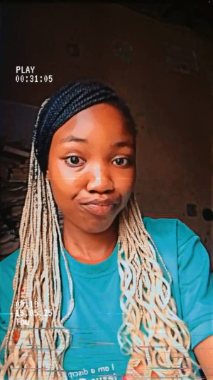

Chinaza Glory N. Obinna| WDD 130
Hello! I am Chinaza Glory Obinna. I live in the beautiful city of Abuja, Nigeria, I am currently a student with BYU Pathway Worldwide—an experience that is helping me grow academically, spiritually, and personally. I am passionate about programming and enjoy learning new technologies and building creative projects. I love spending quality time with my family and friends, and I am a proud dog owner. My favorite place is the temple because it reminds me of the Saviors love for me and helps me feel peace and inspiration. In my free time, I enjoy listening to music, reading inspiring books, and watching Korean dramas. I also love exploring new cultures and cuisines. My goal is to use my skills to make a positive impact in my community and inspire others to pursue their dreams. Above all, I love being myself and embracing every opportunity to learn and grow.